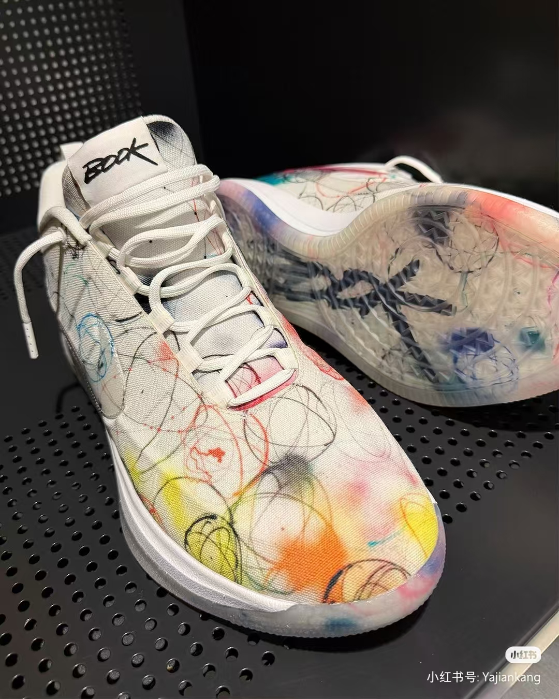

ORG-BG1 爆款
$189/ 件
ORG-BG1 云驰后卫低帮篮球鞋
一步过人，持续跑动无负担，后卫核心战靴。
核心卖点 KEY POINTS
420g 轻量化鞋身，低帮领口不锁脚踝，前掌分区高回弹泡棉，专为连续变向、一步过人设计；人字纹防滑橡胶大底，室内外场地通用；后跟超薄稳定片，减重同时减少落地偏移。
商品详情 FULL STORY
专为后卫突破逻辑打造，低帮释放脚踝活动空间，大幅度 crossover、转身无束缚；前掌高回弹材料，蹬地瞬间快速反馈，降低持续跑动的体能消耗；分区防滑纹路，急停时牢牢锁地，避免打滑崴脚；轻薄工程网布，高强度对抗下保持足部干爽，热熔压条补强鞋身，减少变向带来的鞋面撕裂。